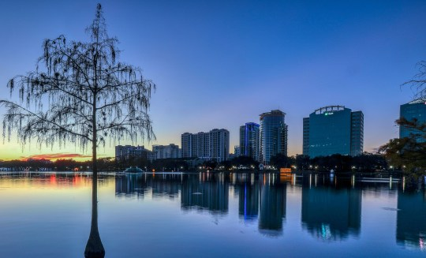

Greisa Cajas
About Me
Hello! I'm Greisa Cajas, going into my 3rd block with BYU Pathways. I'm originally from Provo, Utah and have been living in the Orlando, Florida area for over 20 years. I'm looking forward to learning more in this class and to continue getting closer to completing my degree!
Orlando, FL

Orlando offers a wide array of activities beyond its famous theme parks. You can explore the beautiful Harry P. Leu Gardens or enjoy a day at Lake Eola Park in the heart of downtown. For art enthusiasts, the Orlando Museum of Art and the Dr. Phillips Center for the Performing Arts offer cultural experiences.
Web Dev Resources
- HTML5
- CSS3
- JavaScript
- Responsive Design